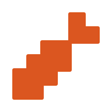

Projet Quadtree

Description
Un projet scolaire de création de jeu vidéo créé en Go dans le but de maîtriser les structures de données quadtree.
Fonctionnalités
- Une gestion de la mémoire optimisée grâce à la structure de données utilisée.
- Un zoom possible sur l'environnement.
- Une génération de terrain aléatoire.
- Un système d'animation et de texture connecté avec des collisions.
- Une caméra dynamique et précise.
Langages et Bibliothèques
-
 Golang
Golang
-  Ebiten